扉页
版权页
京权图字：01-2002-6579
Originally published by Oxford University Press, Great Clarendon Street, Oxford. ©2000
This edition is licensed for sale in the People's Republic of China only and not for export therefrom.
'Oxford' is a registered trademark of Oxford University Press.
只限中华人民共和国境内销售，不包括香港、澳门特别行政区及台湾省。不得出口。
图书在版编目（CIP）数据
别了，好莱坞先生：英汉对照／（英）埃斯科特（Escott, J.）著；关志远译．—北京：外语教学与研究出版社，2003.6（2014.6 重印）
（书虫·牛津英汉双语读物）
书名原文：Goodbye Mr Hollywood
ISBN 978-7-5600-3676-2
Ⅰ．别… Ⅱ．①埃…②关… Ⅲ．英语—对照读物，小说—英、汉 Ⅳ．H319.4：I
中国版本图书馆CIP数据核字（2003）第075365号
出版人： 蔡剑峰
责任编辑：易 璐
封面设计：刘 莎
出版发行：外语教学与研究出版社
杜 址：北京市西三环北路19号（100089）
网 址：http://www.fltrp.com
版 次：2003年9月第1版
书 号：ISBN 978-7-5600-3676-2
* * *
凡侵权、盗版书籍线索，请联系我社法律事务部
举报电话：（010）88817519 电子邮箱：banquan@fltrp.com
法律顾问：立方律师事务所 刘旭东律师
中咨律师事务所 殷 斌律师
内容简介
内容简介
“女孩儿突然用手捧住尼克的脸，吻了他的嘴唇。‘开车小心点儿，好莱坞先生。再见！’女孩儿带着甜甜的微笑说，然后转过身迅速离去了。”
尼克·洛茨感到莫名其妙。仅仅十分钟前，女孩来到咖啡馆坐在了他旁边，尼克这才认识她的。可她离去时为什么吻了他？她为什么叫他“好莱坞先生”？在开车去温哥华的路上他一直思考着这些问题，可始终找不到答案。其实，这里还有一件事尼克不知道。
当女孩对尼克说再见时有人在旁边正听着呢——这个人对“好莱坞先生”这个称呼很感兴趣。在温哥华，尼克很快便得知那个人的兴趣于己不利……
GOODBYE, MR HOLLYWOOD
GOODBYE, MR HOLLYWOOD
'The girl suddenly took Nick's face between her hands, and kissed him on the mouth. "Drive carefully, Mr Hollywood. Goodbye," she said, with a big, beautiful smile. Then she turned and walked quickly away.'
Nick Lortz doesn't understand. He only met the girl ten minutes ago when she came and sat next to him in the café. So why does she kiss him when she leaves? And why does she call him 'Mr Hollywood'? He thinks about these questions when he is driving to Vancouver, but he doesn't find the answers. And there is one more thing that Nick doesn't know.
Somebody is listening when the girl says goodbye to him—somebody who is very interested in the name 'Mr Hollywood'. And in Vancouver Nick soon learns that it's not a friendly interest...
目录
1．Mystery girl
1
Mystery girl
It all began on a beautiful spring morning in a village called Whistler, in Canada—a pretty little village in the mountains of British Columbia.
There was a café in the village, with tables outside, and at one of these tables sat a young man. He finished his breakfast, drank his coffee, looked up into the blue sky, and felt the warm sun on his face. Nick Lortz was a happy man.
The waiter came up to his table. 'More coffee?' he asked.
'Yeah. Great,' said Nick. He gave the waiter his coffee cup.
The waiter looked at the camera on the table. 'On vacation?' he said. 'Where are you from?'
'San Francisco,' Nick said. He laughed. 'But I'm not on vacation—I'm working. I'm a travel writer, and I'm doing a book on mountains in North America. I've got some great pictures of your mountain.'
The two men looked up at Whistler Mountain behind the village. It looked very beautiful in the morning sun.
'Do you travel a lot, then?' asked the waiter.
'All the time,' Nick said. 'I write books, and I write for travel magazines. I write about everything—different countries, towns, villages, rivers, mountains, people...'
The waiter looked over Nick's head. 'There's a girl across the street,' he said. 'Do you know her?'
Nick turned his head and looked. 'No, I don't.'
'Well, she knows you, I think,' the waiter said. 'She's watching you very carefully.' He gave Nick a smile. 'Have a nice day!' He went away, back into the café.
Nick looked at the girl across the street. She was about twenty-five, and she was very pretty. 'She is watching me,' Nick thought. Then the girl turned and looked in one of the shop windows. After a second or two, she looked back at Nick again.
Nick watched her. 'She looks worried,' he thought. 'What's she doing? Is she waiting for somebody?'
Suddenly, the girl smiled. Then she walked across the street, came up to Nick's table, and sat down. She put her bag down on the table. The bag was half-open.
'Hi! I'm Jan,' she said. 'Do you remember me? We met at a party in Toronto.'
'Hi, Jan,' said Nick. He smiled. 'I'm Nick. But we didn't meet at a party in Toronto. I don't go to parties very often, and never in Toronto.'
'Oh,' the girl said. But she didn't get up or move away.
'Have some coffee,' said Nick. The story about the party in Toronto wasn't true, but it was a beautiful morning, and she was a pretty girl. 'Maybe it was a party in Montréal. Or New York.'
The girl laughed. 'OK. Maybe it was. And yes, I'd love some coffee.'
When she had her coffee, Nick asked, 'What are you doing in Whistler? Or do you live here?'
'Oh no,' she said. 'I'm just, er, just travelling through. And what are you doing here?'
'I'm a travel writer,' Nick said, 'and I'm writing a book about famous mountains.'
'That's interesting,' she said. But her face was worried, not interested, and she looked across the road again.
A man with very short, white hair walked across the road. He was about sixty years old, and he was tall and thin. The girl watched him.
'Are you waiting for someone?' asked Nick.
'No,' she said quickly. Then she asked, 'Where are you going next, Nick?'
'To Vancouver, for three or four days,' he said.
'When are you going?' she asked.
'Later this morning,' he said. There was a letter in the top of the girl's half-open bag. Nick could see some of the writing, and he read it because he saw the word 'Vancouver'—... and we can meet at the Empress Hotel, Victoria, Vancouver Island, on Friday afternoon...
'So she's going to Vancouver too,' he thought.
Suddenly the girl said, 'Do you like movies?'
'Movies? Yes, I love movies,' he said. 'Why?'
'I know a man, and he—he loves movies, and going to the cinema,' she said slowly. 'People call him "Mr Hollywood".' She smiled at Nick. 'Can I call you "Mr Hollywood" too?'
Nick laughed. 'OK,' he said. 'And what can I call you?'
She smiled again. 'Call me Mystery Girl,' she said.
'That's a good name for you,' said Nick.
Just then, the man with white hair came into the café. He did not look at Nick or the girl, but he sat at a table near them. He asked the waiter for some breakfast, then he began to read a magazine.
The girl looked at the man, then quickly looked away again.
'Do you know him?' Nick asked her.
'No,' she said. She finished her coffee quickly and got up. 'I must go now,' she said.
Nick stood up, too. 'Nice to—' he began.
But the girl suddenly took his face between her hands, and kissed him on the mouth. 'Drive carefully, Mr Hollywood. Goodbye,' she said, with a big, beautiful smile. Then she turned and walked quickly away.
Nick sat down again and watched her. She walked down the road and into a big hotel.
'Now what,' thought Nick, 'was that all about?'
* * *
The man with white hair watched Nick and waited. After four or five minutes, Nick finished his coffee, took his books and his camera, and left the café. His car was just outside the girl's hotel, and he walked slowly along the street to it.
The man with white hair waited a second, then quickly followed Nick.
From a window high up in the hotel, the girl looked down into the road. She saw Nick, and the man with white hair about fifty yards behind him. Nick got into his car, and the man with white hair walked quickly to a red car across the street. Five seconds later Nick drove away in his blue car, and the red car began to follow him.
When the girl saw this, she smiled, then went to put some things in her travel bag.
café n. small inexpensive restaurant serving meals and drinks. 咖啡馆。
breakfast n. first meal of the day. 早餐。
waiter n. man employed to take customers' order, bring food, etc. 服务员。
on vacation on holiday. 在度假。
travel n. travelling.旅游。
picture n. photograph. 照片，相片。
across prep. from one side to the other side. 从一边到另一边，横过。
watch v. keep an eye on sb. or sth.注视。
worried adj. feeling or showing worry about sb./sth. 担忧的，担心的。
suddenly adv. happening, coming or done quickly and unexpectedly. 突然地。
come up to come close to. 走过来，走近。
remember v. have or keep sb./sth. in the memory. 记得，记着。
party n. social gathering to which people are invited. 社交聚会。
through adv. in at one side and out at the other. 穿过，通过；对穿。
famous adj. known to very many people. 著名的。
interesting adj. holding the attention; arousing curiosity. 有趣的，引起兴趣的。
interested adj. showing curiosity or concern (about sb. or sth.). （对某人或某事物）感兴趣的，关心的。
writing n. written words. 书写的文字。
movie n. cinema film. 电影。
mystery n. secrecy. 神秘，奥秘。
magazine n. paper-covered periodical, usu. weekly or monthly. 杂志。
yard n. unit of length. 长度单位码。
follow v. come or go after. 跟随；跟着。
神秘女孩儿
1．神秘女孩儿
故事发生在一个美丽春日的早晨，地点是加拿大一个叫惠斯勒的村庄——这是一个美丽的小村庄，坐落在不列颠哥伦比亚省的山区。
村子里有个咖啡馆，外面摆着几张桌子，一个年轻人坐在一张桌子旁。他吃完了早餐，喝完了咖啡，抬头看看湛蓝的天空，阳光照在他脸上，暖暖的。他叫尼克·洛茨，是个快乐的人。
服务员走到他的桌子旁。“再来点儿咖啡吗？”他问道。
“是的，太好了。”尼克说着，把咖啡杯递给了服务员。
服务员看看桌子上的照相机。“来度假的吧？”他问道，“你是从哪里来的？”
“旧金山。”尼克答道。接着又笑了，“不过我不是度假的——我是在工作。我是个旅行作家，正在写一本关于北美山岳的书。我已经拍了一些你们这里的山的照片，很棒。”
两人抬头看着村子后面的惠斯勒山。晨光中的惠斯勒山显得非常美丽。
“那你是不是经常旅行？”服务员问道。
“我一直在旅行，”尼克说，“我写书，还给旅游杂志撰稿。我什么都写——不同的国家、城镇、村庄、河流、山脉，还有人们……”
服务员从尼克的头上往他身后看过去。“街对面有个女孩儿，”他说，“你认识她吗？”
尼克扭过头去看了看。“不认识。”
“不过，我想她认识你，”服务员说道，“她在很认真地观察你。”他朝尼克笑了笑，“祝你今天过得开心！”他走开了，回到了咖啡馆里。
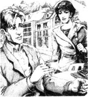
尼克看了看街对面的那个女孩儿。她大概有25岁，长得非常漂亮。“她确实在看我。”尼克想。这时女孩儿转身朝商店的一个橱窗看去。过了一会儿她又转回来看着尼克。
尼克打量着她。“她看起来很焦虑，”他想，“她在干什么？在等人吗？”
突然，女孩儿笑了。接着她穿过街道来到尼克的桌子旁坐了下来。她把提包放在桌子上，提包半开着。
“你好！我叫简，”她说道，“你还记得我吗？我们在多伦多的一次聚会上见过。”
“你好，简，”尼克应道。他笑了笑，“我叫尼克。可是我们没有在多伦多的什么聚会上见过。我不常参加聚会，更没去多伦多参加过聚会。”
“哦。”女孩儿说道。但是她并没有起身，也没有离开。
“喝点儿咖啡吧。”尼克说道。多伦多聚会的故事并不是真的，可当时是个美丽的早晨，还有一个漂亮的女孩儿，“可能我们是在蒙特利尔或者纽约的聚会上见过。”
女孩儿笑了。“哦，可能是吧。对了，给我来点儿咖啡吧。”
她喝咖啡的时候，尼克问道：“你来惠斯勒做什么？还是说你住在这里？”
“哦，不，”她说，“我只是，呃，只是旅行经过这里。对了，你在这里做什么？”
“我是一个旅行作家，”尼克说道，“我正在写一本关于名山的书。”
“那一定很有意思。”她说道。但她脸上的表情并不是感兴趣，而是焦虑，而且她又往马路的对面看了看。
一个留着白色短发的男人穿过马路。他有60岁上下，长得高高瘦瘦的。女孩儿在看他。
“你在等人吗？”尼克问道。
“没有。”女孩儿迅速地回答道。接着又问：“你下一站去哪儿，尼克？”
“去温哥华，待上三四天。”他说道。
“什么时候出发？”女孩儿问道。
“今天上午晚些时候。”他说。女孩儿半开着的提包里的最上面有一封信。尼克能看到上面的一些字，他默读着，因为他看到了“温哥华”这几个字——……我们可于星期五下午在温哥华岛维多利亚的皇后酒店见面……
“那她也要去温哥华喽。”他想。
女孩儿突然问道：“你喜欢电影吗？”
“电影？是的，我喜欢电影。”他回答道，“为什么问我这个？”
“我认识一个人，他——他喜欢电影，也喜欢去电影院，”她不慌不忙地说道，“人们都叫他‘好莱坞先生’。”她冲尼克笑了笑，“我也叫你‘好莱坞先生’可以吗？”
尼克笑了。“可以，”他说道，“那我怎么称呼你呢？”
她又笑了。“叫我神秘女孩儿吧。”她说道。
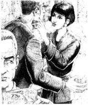
“这名字挺适合你的。”尼克说道。
就在这时，那个白发男人进了咖啡馆。他没有看尼克和那个女孩儿，但坐在了离他们不远的一张桌子旁。他向服务员要了一些早餐，接着开始看一本杂志。
女孩儿看了看那个男的，目光又迅速地转到了一旁。
“你认识他吗？”尼克问她。
“不认识。”她回答。她迅速喝完了咖啡，站起身来。“我现在得走了。”她说道。
尼克也站了起来。“很高兴——”他开口说道。
但是女孩儿突然用手捧住尼克的脸，吻了他的嘴唇。“开车小心点儿，好莱坞先生。再见！”女孩儿带着甜甜的微笑说，然后转过身迅速离去了。
尼克又坐了下来，注视着她。她沿着马路走进了一家大酒店。
“这是……”尼克想道，“这都是怎么回事？”
* * *
那个白发男人看了看尼克，他在等待着什么。过了四五分钟，尼克喝完咖啡，拿了书和照相机，离开了咖啡馆。他的车就停在女孩儿去的那个酒店外面，他沿着大街不慌不忙地向自己的车走去。
白发男人等了一下，迅速跟在了尼克的后面。
女孩儿从酒店高处的一个窗户向马路看下去。她看到了尼克和跟在他后面大约50码远的白发男人。尼克钻进了自己的车里，那个白发男人马上朝街对面一辆红色的汽车走去。五秒钟后尼克开动了他那辆蓝色的汽车，而那辆红色的汽车开始尾随在他后面。
女孩儿看到这些，笑了，接着走开去往旅行包里装起东西来。
2．A hand in the back
2
A hand in the back
That evening, in his hotel room in Vancouver, Nick could not stop thinking about the girl in the Whistler café. Why did she come and sit with him? She didn't know him, and that story about a party in Toronto wasn't true. And she was worried about something. But what?
And that kiss! It was nice, of course, but why did she do it? 'Maybe she liked my face,' Nick thought. 'Or my brown eyes. But I'm not going to see her again, so it doesn't matter. Forget it.'
He put some money in his pocket and went downstairs to the hotel restaurant. But there were no free tables, so he walked down to Gastown and found a restaurant there.
After dinner, he went for a walk. Vancouver was a friendly city, and Nick liked walking through Gastown and Chinatown, looking in the shops and watching the people. It was nearly dark now, and it was a busy time of the evening. There were a lot of cars, and a lot of people.
After a time, Nick began to walk back to his hotel. He came to a busy street, and waited, with a small crowd of people, to go across. A tall woman in a blue dress stood next to him. She turned and smiled at him.
'It's the first warm evening of spring,' she said. 'It's nice to be out, after the long cold winter.'
'Yeah,' said Nick. 'It's great. It's—'
Suddenly, there was a hand in his back—and the hand pushed Nick into the road. Nick fell on his face, in front of a big green car.
People screamed.
But the green car stopped, only inches from Nick's head. The woman in the blue dress ran into the road and pulled Nick to his feet.
'Are you OK? What happened?' she said.
The driver of the green car shouted angrily at Nick, but Nick did not hear him.
'Somebody pushed me,' he said to the woman. 'I didn't fall—somebody pushed me!'
'Pushed you?' said the woman. 'Who? I didn't see anybody.'
Nick looked at the faces of the people near him, but he didn't know them.
Then he saw a man's back. The man was tall and thin, and had very short white hair. He walked quickly away down the street, and did not look back.
'Hey, you!' Nick shouted. 'Wait!'
But the man did not stop, and he was soon lost in the crowds.
'Did he push you?' asked the woman in the blue dress.
'I... I don't know,' Nick said.
'Do you know him?' she asked.
'I don't know his name,' Nick said. 'But I know that short white hair. Now where did I see it before?'
The woman began to move away. 'I must get home,' she said. 'Are you OK now?'
'Yeah, I'm OK,' Nick said. 'And thanks. Thanks for your help.'
'That's OK.' the woman smiled. 'Be careful now!'
* * *
Back in his hotel, Nick sat on his bed and thought. 'It was an accident. Nobody pushed me, it was an accident. Nobody wants to kill me. And there are hundreds of men in Vancouver with white hair.'
It was one o'clock in the morning, but Nick couldn't sleep. He listened to the cars in the road, and he looked at the night sky through his hotel room window.
Then he sat at the table and tried to write some more of his book about mountains, but he couldn't think about his work. He got back into bed.
There were four or five magazines in the hotel room. They were not very interesting, but Nick sat in bed and opened one... and saw a photo of 'Mystery Girl'!
He looked at the picture very carefully. But, yes, it was her! Jan, the girl from the Whistler café.
She was next to a man of about fifty or fifty-five, and they were in the garden of a big, expensive house. They smiled at the camera, and they looked very happy.
Canadian millionaire, Howard Hutson, and his daughter, Meg, it said under the picture, at their home in Toronto. Meg Hutson! Not Jan. Not Mystery Girl. Meg Hutson, the daughter of a millionaire! Nick read it again.
'Why did she come and sit with me in the café at Whistler?' he thought. 'Millionaires' daughters don't sit with strangers in cafés, and then give them a big kiss when they leave! Why did she do it? What did she want?'
* * *
He thought back to the café in Whistler, and the girl next to him at the table. Then he remembered something. He remembered a man at a table near them in the café. A tall thin man, about sixty years old. A man with very short white hair.
Nick didn't sleep much that night.
of course certainly. 当然。
Forget it. 算了吧，不提了。
downstairs adv. down the stairs. 顺楼梯而下。
restaurant n. public place where meals can be bought and eaten. 餐馆，饭馆。
free adj. (of a place) not occupied or being used. （指地方）未占用的，空着的，闲着的。
dinner n. main meal of the day. 正餐（在西方国家一般指晚餐）。
crowd n. large number of people gathered together in the open. 人群。
in front of... before. 在……前面。
scream v. give a long piercing cry of fear, pain. 尖声喊叫，尖叫。
Are you OK? 你没事吧？
shout v. speak or call out in a loud voice. 大声说，喊，呼叫。
accident n. event that happens unexpectedly and causes damage, injury, etc. 事故，意外。
expensive adj. costing a lot (of money). 费用大的，昂贵的。
millionaire n. person who has a million pounds, dollars, etc.; very rich person. 百万富翁；大富翁。
背后的黑手
2．背后的黑手
那天晚上，在温哥华的酒店房间里，尼克一直在想着在惠斯勒那家咖啡馆里遇到的那个女孩儿。她为什么要过来跟他坐在一起？她不认识他，那个多伦多聚会的事也是无中生有。当时有什么事情让她很焦虑。可到底是什么事呢？
还有那个吻！当然是很甜蜜的一个吻，但她为什么要那样做呢？“也许她喜欢我的脸，”尼克想道，“或者是我棕色的眼睛。可是我不会再见到她了，所以也没什么。算了吧。”
他拿了一些钱放进口袋里，下楼去了酒店的餐厅。可是那里没有空餐桌了，于是他步行去加斯敦街，在那里找了一家餐馆。
晚饭后他出去散了散步。温哥华是个友好的城市，尼克很喜欢在加斯敦街和唐人街逛，看看这里的商店，观察观察这里的人们。天色快要黑下来了，这正是夜晚繁忙的时候。到处都有很多的车、很多的人。
过了一会儿，尼克开始返回他落脚的酒店。他来到一条繁华的街道，和一小群人一道停下来等着过街。一个身着蓝色衣服的高个子女人站在他的旁边。她转过身来冲他笑了笑。
“这是开春来第一个温暖的夜晚，”她说道，“漫长寒冷的冬天过后出来走走真好。”
“是的，”尼克答道，“这样太好了。这样——”
突然，从尼克背后伸过来一只手——那只手把尼克狠狠地推到了马路上。尼克趴在了地上，刚好倒在一辆绿色汽车的前面。
人们尖叫起来。
但是那辆绿色的汽车停住了，离尼克的脑袋只有几英寸远。穿蓝衣服的女人跑到马路上把尼克扶了起来。
“你没事吧？怎么回事？”她问道。
绿色汽车的司机生气地冲尼克喊着，可是尼克并不理会他。
“有人推我，”他对那个女人说，“不是我自己摔倒的——有人推我！”
“推你？”女人问道，“谁呀？我谁也没有看到。”
尼克看看周围人的脸，可是他根本不认识那些人。
接着，他看到了一个人的背影。那个人高高瘦瘦的，留着非常短的白发。他沿着街道迅速地走开了，连看都没有回头看一眼。
“喂，你！”尼克大喊，“等等！”
可是那个人没有止步，并迅速地消失在人群中。
“是他推你的吗？”蓝衣女人问道。
“我……我不知道。”尼克答道。
“你认识他吗？”她接着问。
“我不知道他的名字，”尼克答道，“可是我认得出他的白色短发。我在哪儿见过这白发呢？”
女人要走了。“我得回家了，”她说道，“你现在没事了吧？”
“是的，没事了，”尼克答道，“谢谢你了。谢谢你的帮助。”

“不用客气。”女人笑着答道，“从现在开始要小心点儿喽！”
* * *
回到酒店，尼克坐在床上想着：“应该是个意外。没有人推我，这是个意外。没有人要害我。何况温哥华有成百上千的人有白头发。”
已经是凌晨1点钟了，但尼克始终不能入睡。他听着街上的汽车声，透过房间的窗户望着夜空。
于是他坐在桌子旁，试图继续往下写他的关于名山的书，可是他无法静下心来进行工作。他又回到了床上。
酒店房间里有四五本杂志。杂志并没有多大意思，可是当尼克坐在床上翻开其中一本时……居然看到了一张“神秘女孩儿”的照片！
他非常仔细地看了那张照片。可是，没错，就是她！简，在惠斯勒的咖啡馆里遇到的那个女孩儿。
她坐在一个大约50到55岁的男人旁边，他们当时是在一幢很大很豪华的房子的花园里。他们对着镜头笑着，显得非常快乐。
“加拿大百万富翁霍华德·赫特森和他的女儿梅格，”照片下面这样写着，“在他们多伦多的家里。”梅格·赫特森！不是简，也不是什么神秘女孩儿，而是梅格·赫特森，百万富翁的女儿！尼克又看了一遍。
“为什么在惠斯勒的咖啡馆里她过来坐在我身边？”他这样想着，“百万富翁的女儿是不会在咖啡馆里跟陌生人坐在一起的，更不会在临走时给他们一个深深的吻！她为什么要这么做？她想干什么？”
* * *
他又回想起惠斯勒的那家咖啡馆和坐在他身旁的那个女孩儿。接着他又回想起另外一件事。他想起当时咖啡馆里坐在他们不远处的一个男人。那个高高瘦瘦、60岁上下留着白色短发的男子。
尼克那天晚上没怎么睡。
3．A walk in the park
3
A walk in the park
The next day was Thursday. Nick stayed in his hotel room and wrote about mountains all morning. Then he drove to Stanley Park in the afternoon. He sat and read a book for an hour, then he went for a walk under the tall trees.
There was nobody here. It was quiet, and he could walk and think. He thought about Meg Hutson, and about the man with white hair. Did he know Meg Hutson? Did she know him? He remembered Meg Hutson's last words. Drive carefully, Mr Hollywood.
Why did she say that? Why did she call him Mr Hollywood? He didn't understand any of it.
Suddenly, he heard a noise.
He stopped. 'That was a gun!' he thought. 'There's somebody in the trees with a gun! There it is again!'
Then something hit the tree over his head.
'Somebody's shooting at me!' Nick thought. He turned and run.
And somebody began to run after him.
Nick ran through the trees. There was no sun in here, and it was half-dark. And there were no people. Nobody to help him.
'I must get to my car,' Nick thought. 'Find some people... the police...' He ran on.
He could still hear the gunman behind him, so he ran faster. After three or four minutes, he stopped and listened.
Nothing. It was all quiet.
Nick was afraid. 'What's happening?' he thought. 'Why is somebody shooting at me? First a hand pushes me in front of a car, and now somebody's shooting at me!'
He waited another second or two, then walked quickly back to his car. He was very careful. He looked and listened all the time. But nobody came out of the trees, and nobody shot at him. Then he saw people—women with young children, some boys with a football, two men with a dog. He began to feel better. 'Nobody can shoot me now,' he thought. 'Not with all these people here.'
Ten minutes later, he was back at his car.
There was a letter on the window. Nick read it. It said:
I'm going to kill you, Mr Hollywood.
* * *
Nick drove to the nearest police station. He waited for half an hour, then a tired young policeman took him into a small room. Nick told his story, and the policeman wrote it all down.
'So what are you going to do?' asked Nick.
'Nothing,' said the policeman.
'Nothing!' said Nick. 'But somebody shot at me, and—'
'Mr Lortz,' the policeman said tiredly. 'How many people are there in this town with guns?'
'I don't know,' said Nick. 'But...'
'You didn't see the gunman. Was it a man, a boy, a woman? Colour of eyes? Long hair, short hair? You don't know, because you didn't see anybody. Maybe it was an old girlfriend. Maybe somebody doesn't like your travel books, Mr Lortz.'
'But what about the man with white hair in Whistler?' said Nick. 'The girl, Meg Hutson, called me Mr Hollywood in the café, and this man heard her. And now I get a letter to Mr Hollywood on my car. Who is this Mr Hollywood?'
'We all want answers to our questions, Mr Lortz,' the policeman said, 'but we don't always get them.'
Questions. But no answers.
Nick walked out of the police station and drove to his hotel. He was angry, and afraid.
'How did the man with white hair find me in Vancouver?' he thought. 'Did he follow me from Whistler? Is he following me now? Maybe he's staying at my hotel, too. In the next room. With his gun.'
noise n. sound, esp. when it is loud. unpleasant, confused or unwanted. 响声；噪音。
shoot v. fire a gun. 开枪。
gunman n. 杀手；枪手。
quiet adj. with little or no sound; not noisy or loud. 无声的，安静的。
police station 警察局。
tired adj. feeling that one would like to sleep or rest. 困倦的，疲倦的。
girlfriend n. female companion, esp. a man's regular partner. （男子的）女朋友。
公园漫步
3．公园漫步
第二天是星期四。尼克整个上午都待在酒店的房间里写他的关于名山的书。下午他便开车去斯坦利公园。他坐下来看了一个小时的书，接着走进树木高大的林子里散步。
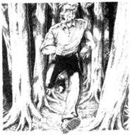
树林里没有人。四周非常安静，让他可以边走边思考问题。他想起了梅格·赫特森，还有那个留着白头发的人。他认识梅格·赫特森吗？她又认识他吗？他想起了梅格·赫特森最后对他说的话。“开车小心点儿，好莱坞先生。”
她为什么那样说？她为什么叫他好莱坞先生？他怎么也弄不明白。
突然，他听到一声响。
他停了下来。“是枪声！”他想，“树林里有人带枪！又是一声枪响！”
接着有东西打到他头顶的树干上。
“有人在开枪打我！”尼克想着，转身就跑。
紧接着就有人开始在后面追他。
尼克穿过树林。树林里没有阳光，非常昏暗。也没有人，没有人能帮他。
“我必须回到我的车上去，”尼克这样想着，“找一些人来……去找警察……”他继续往前奔跑。
他仍能听到持枪的人在后面追他，于是他跑得更快了。过了三四分钟以后，他停下来四下里听了听。
什么也没有。四周静悄悄的。
尼克非常害怕。“出什么事了？”他想，“为什么有人开枪打我？起初有人把我往车前推，现在又有人开枪打我！”
他又等了一会儿，接着快步走回停车的地方。他非常谨慎，不时地四下张望着、听着。可是再也没有人从树林里出来，更没有人朝他开枪。接着他看到了人——带着小孩的妇女、踢球的男孩子们和两个遛狗的男子。他开始感觉好些了。“现在没人能开枪打我了，”他想道，“有这么多人，肯定没人会开枪打我了。”
10分钟后他回到了汽车旁。
车窗上有一封信，尼克看了看。上面写道：
我要杀了你，好莱坞先生。
* * *
尼克开车去了最近的一个警察局。他等了半个小时，接着一个看上去很疲倦的年轻警察把他领到一个小房间里。尼克讲了刚才的事情，警察做了记录。
“你们准备怎么处理此事？”尼克问道。
“没什么可处理的。”警察说。
“没什么可处理的！”尼克说道，“可有人开枪打我呀，还有——”
“洛茨先生，”警察懒懒地说，“这个城镇里有多少人有枪？”
“我不知道，”尼克回答，“可……”
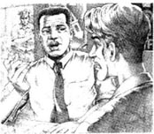
“你没有看见那个持枪者呀。那个人是男是女还是小孩子？眼睛是什么颜色的？长发还是短发？你不知道，因为你谁也没有看到。或许是你原来的女朋友，或许是一些不喜欢你写的旅游书的人，洛茨先生。”
“可你觉得惠斯勒的那个白发男子是怎么回事？”尼克说道，“那个叫梅格·赫特森的女孩儿在咖啡馆里管我叫好莱坞先生，那个人听到了。还有这会儿我在我的车上收到一封给好莱坞先生的信。这个好莱坞先生究竟是谁呢？”
“我们都希望找到问题的答案，洛茨先生，”警察说，“可我们不是总能找得到的。”
问题一个接一个。可都没有答案。
尼克从警察局出来，开车回酒店。他又生气又害怕。
“那个白发男子怎么能在温哥华找到我呢？”他想，“他是从惠斯勒跟踪我来到这里的吗？他现在还在跟踪我吗？也许他也住在我住的那家酒店，可能就在隔壁房间里，还带着枪。”
4．The man with white hair
4
The man with white hair
Nick stopped his car in front of the hotel. He looked carefully before he got out, but there was nobody with white hair near the hotel.
He half-ran through the hotel doors and went to the desk inside.
'I'm looking for a man with very short white hair,' he said to the woman behind the desk. 'He's staying here, I think. He's about sixty years old, and he's tall and thin.'
The woman did not look very interested. 'There are a lot of visitors in the hotel,' she said. 'Do you know his name?'
'No, I don't,' Nick said. 'He's, er, a friend of a friend, you see. He arrived in Vancouver yesterday, and I must find him. It's very important. Please help me!'
The woman looked at him. 'There are three hundred and fifty rooms in this hotel,' she said, 'and maybe thirty or forty men with white hair. How can I remember all their names?' She turned away to answer a telephone call.
Nick walked away from the desk.
'A drink,' he thought. 'I need a drink.' He went into the hotel bar, got a drink and sat down at a table.
'So what do I do now?' he thought.
And then he remembered something. A letter in the girl's half-open bag in the Whistler café.
... and we can meet at the Empress Hotel, Victoria, Vancouver Island, on Friday afternoon...
And tomorrow was Friday.
'I'm going to Victoria, on Vancouver Island!' he thought. 'To the Empress Hotel!'
* * *
Nick had dinner in the hotel that evening. He finished eating and got up from his table... and saw the man with white hair.
Nick moved quickly. The man was at the hotel desk. Nick could see the white head above the other heads near the desk.
'Excuse me!' said Nick. He pushed past the people in the hotel restaurant. A small boy ran in front of him and Nick ran into him. The boy and Nick fell down on the floor. The boy began to cry.
'Hey!' said a woman behind Nick.
'I'm very sorry!' said Nick. He got up and helped the boy to his feet. 'Are you OK?' he asked the boy.
'Be more careful next time,' said the woman.
Nick moved away quickly, but when he looked back at the hotel desk, he couldn't see the man with white hair. He pushed through the crowd of people.
'That man!' he shouted at the woman behind the desk. 'That man with short white hair. Where did he go?'
The woman looked at Nick. 'Mr Vickers?' she said. 'I don't know.'
'Vickers? Is that his name?' said Nick. 'What's his room number?'
'I'm sorry, I can't tell you that,' the woman said.
'But I need to—' began Nick.
The woman turned away to answer the telephone.
After a second or two, Nick went upstairs to his room.
'Vickers,' he thought. 'Does Meg Hutson know Mr Vickers? I need some answers, and I need them quickly!'
look for search for or try to find (sb./sth.). 寻找或寻求（某人或某事）。
visitor n. person who stays temporarily at a place or with a person. 游客；宾客。
important adj. very serious and significant. 重要的；重大的。
turn away stop facing or looking at sb./sth. 转过脸不面对或不再看着某人或某物。
bar v. room in a hotel, public house, etc. in which drinks are served. （旅馆、客栈等的）酒吧间。
fall down stop standing, esp. suddenly. 倒下（尤指突然间）。
get up stand after sitting, kneeling, etc. 站起，起来。
白发男子
4．白发男子
尼克在酒店前停了车。下车前他仔细观察了一番，可酒店附近没有什么白发男子。
他小跑着穿过了酒店的大门，来到里边的前台。
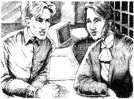
“我找一个留着白色短发的人，”他对前台里面的女人说，“我想他住在这里。他大约60岁上下，又高又瘦。”
那个女的看起来并不十分在意。“酒店里有很多客人，”她说，“你知道他的名字吗？”
“不，不知道，”尼克答道，“他是，呃，是一个朋友的朋友，你明白吧。他昨天到的温哥华，我必须找到他。这很重要。拜托请帮帮忙！”
女人看着尼克。“酒店里有350个房间，”她说，“或许有三四十个男人都留着白发。我怎么能记得住他们所有人的名字？”她转过身去接电话了。
尼克离开了前台。
“喝一杯，”他想，“我需要喝一杯。”他走进酒店里的酒吧，要了杯酒，坐了下来。
“那我现在做些什么？”他思索着。
于是他回忆起了什么，就是在惠斯勒的那家咖啡馆，那个女孩儿半开的包里的一封信。
“……我们可于星期五下午在温哥华岛维多利亚的皇后酒店见面……”
明天就是星期五。
“我得去温哥华岛的维多利亚！”他想，“去皇后酒店！”
* * *
那天晚上尼克在酒店吃晚餐。吃完饭后他从餐桌旁站起身来……看到了那个白发男子。
尼克赶紧走了过去。那个男人站在酒店的前台旁边。尼克能看到那个高出人丛的白色脑袋。
“对不起，请让一下！”尼克说道。他推开酒店餐厅里的人群。一个小男孩儿挡住了他的去路，尼克撞到了他。男孩儿和尼克都摔倒在地上。男孩儿哭了起来。
“嗨！”尼克身后的一个女人喊道。
“非常抱歉！”尼克说道。他站起来，把那个小男孩儿也扶了起来。“你没事吧？”他问男孩儿。
“下回小心点儿。”女人说道。
尼克赶紧走开，可当他回过头往前台那边看时，那个白发男子却不见了。他冲出了人群。
“就是那个男的！”他朝前台的那个女人喊道，“那个留着白色短发的男人。他去哪儿了？”
女人看了尼克一眼。“维克斯先生？”她说道，“我不知道。”
“维克斯？他叫维克斯吗？”尼克问道，“他住在哪个房间？”
“对不起，这个我不能告诉你。”女人说道。
“但是我需要——”尼克恳求道。
女人转过身去接电话了。
不一会儿，尼克回到了他楼上的房间。
“维克斯，”他想，“梅格·赫特森认识维克斯先生吗？我得找到答案，马上找到！”
5．Vancouver Island
5
Vancouver Island
Tsawwassen was about twenty-three miles south of Vancouver. Nick drove there in his car the next morning for the one o'clock ferry to Vancouver Island. Every five minutes, he looked behind him. The road was busy—black cars, white cars, red cars, green cars. Maybe Vickers was in one of them.
At Tsawwassen Nick drove his car on to the ferry. There were a lot of cars and crowds of people. Nick got out of his car and walked up and down the ship. He looked for a man with white hair but he didn't see one.
Soon the ferry began to move and Nick felt better. He found the ferry restaurant and got something to eat. More people came in. Nick looked at the faces of all the older men. Some had hats on, so he looked for somebody tall and thin, but there was nobody.
'Maybe he's not on the ferry,' Nick thought. 'Maybe he's back in Vancouver.'
Later, Nick walked around the ship again. Once, he thought he saw the man with white hair in the crowds, but he could not be sure.
Ninety minutes after leaving Tsawwassen, the ferry arrived at Swartz Bay on Vancouver Island, and Nick went back down to his car.
Swartz Bay was twenty miles north of Victoria. Nick drove quickly, and again, looked behind him every four or five minutes. Once, he saw a red car about two hundred yards behind him.
'Did I see that car on the road from Vancouver to Tsawwassen?' he thought.
He drove more slowly, but the red car still stayed two hundred yards behind him, and Nick couldn't see the driver's face or hair.
Soon he was in the busy streets of Victoria, and Nick didn't see the red car behind him again.
Victoria was a city of gardens and beautiful old buildings. Nick liked Victoria very much, but today he wasn't interested in gardens or buildings.
He found the Empress Hotel, went inside and walked across to the desk.
'Can I help you?' a young man asked Nick.
'I'm meeting a friend here this afternoon,' said Nick. 'Miss Hutson.'
'Hutson?' said the young man. 'Wait a minute.' He went away and came back. 'Sorry, but there's no Miss Hutson staying here.'
Nick took something from his pocket. It was the photograph of Meg and her father, from the magazine. 'This is her,' he said.
The young man looked at the picture. 'Oh, right. You mean Howard Hutson's daughter,' he said. 'She's not staying here, but I saw her ten or fifteen minutes ago. She was with somebody—a man. He asked me about the tea room.'
'The tea room?' said Nick. 'Where's that?'
* * *
The man with short white hair was tired. He couldn't sleep and he couldn't eat. He thought about only one thing, all the time. He drove and he watched, and he waited and he followed.
When he drove into Victoria, the streets were busy, and suddenly he lost the blue car in front of him. Angrily, he drove around the city, past all the big hotels. 'I must find him,' he said. 'I must do it. Today.'
Then he saw the Empress Hotel, and in the street outside it, a blue car.
He drove past the hotel, left his car, and ran back down the street. He went across the road and walked past the downstairs windows. There was a big room with tables and chairs, and a lot of people. He looked carefully at all the faces.
'There she is!' he said suddenly.
There were two men with the girl. He couldn't see their faces, only the backs of their heads, but one of the men was in a green shirt.
'Mr Hollywood,' the man said, and smiled. 'Goodbye, Mr Hollywood.' People in the street turned to look at him, but the man did not see them.
He walked up to the doors of the hotel and put a hand into his pocket. Inside, the gun was cold and hard.
ferry n. boat that carries people and good s across a stretch of water. 渡船。
bay n. part of the sea enclosed by a wide curve of the shore. 海湾。
Can I help you? 可以帮你吗？
stay v. remain or continue in the same place. 停留；留下。
pocket n. small bag sewn into or onto a garment and forming part of it, for carrying things in. （衣服上的）口袋，袋子，兜儿，衣袋。
inside adv．on or to the inside. 在或向里面。
温哥华岛
5．温哥华岛
吐瓦森在温哥华以南大约23英里处。尼克第二天上午开车赶往那里，为的是赶下午1点的渡轮去温哥华岛。他每隔5分钟就往后看看。公路上很繁忙——黑色的车，白色的车，红色的，还有绿色的。或许维克斯就在其中的一辆车里。
尼克把车开上了吐瓦森的渡轮。那里停了很多车，人群也熙熙攘攘的。尼克从车里出来，在船上四处转了转。他想看看有没有留着白头发的人，可是没有看到。
渡轮很快就开动了，尼克也感觉好点儿了。他找到了渡轮上的餐厅，要了些东西吃。随后，更多的人来到了餐厅。尼克打量着每一个上岁数的人的脸。有人还戴着帽子，于是他就找又高又瘦的人，但还是什么也没发现。
“也许他没在这艘渡轮上，”尼克想，“也许他回温哥华去了。”
过了一会儿，尼克又在船上走了一圈。他一度觉得好像在人群中看到了那个白发男子，可他也说不准。
渡轮离开吐瓦森90分钟后就到达了温哥华岛的斯瓦茨湾，尼克回到了他的车上。
斯瓦茨湾位于维多利亚北面20英里处。尼克把车开得飞快，仍旧每隔四五分钟就回头看看。有一次，他看到在他后面大约200码远的地方有一辆红色的车。
“从温哥华去吐瓦森的路上我看到那辆车了吗？”他想道。
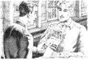
他放慢了车速，可那辆红色的车始终在他后面200码开外，而尼克又看不见司机的脸和头发。
尼克很快就来到了维多利亚繁华的街道上，也就又看不到后面那辆红色的车了。
维多利亚是个美丽的城市，有很多花园和漂亮的古建筑。尼克很喜欢这里，可是今天他对花园和建筑都没有兴趣。
他找到了皇后酒店，进去径直走到前台。
“我能为你做些什么吗？”一个年轻人问尼克。
“我今天下午要在这儿见一个朋友，”尼克说道，“赫特森小姐。”
“赫特森？”年轻人说，“等一下。”他走开了一会儿又回来了，“对不起，赫特森小姐不住在这里。”
尼克从口袋里掏出了什么东西。是梅格和他父亲的照片，从那本杂志上剪下来的。“这就是赫特森小姐。”他说。
年轻人看了看照片。“哦，是的。你是说霍华德·赫特森的女儿，”他说，“她不住在这儿，可我10到15分钟之前看到她了。她跟一个人在一起——一个男的。他向我打听茶座在哪里。”
“茶座？”尼克问，“茶座在哪里？”
* * *
那个留着白色短发的男人已经很疲倦了。他吃不好，睡不好，一直都只想着一件事。他要么开车赶路，要么盯梢观察，要么等待，要么跟踪。
当他开车到了维多利亚时，街上非常繁忙，他突然找不到前面那辆蓝色的车了。他气急败坏地开着车转遍了整个城市，看过了所有的大酒店。“我必须找到他，”他说，“我必须找到他。就在今天。”
后来他发现了皇后酒店，在酒店门口的街边停着一辆蓝色的车。
他开车从酒店门口经过，下了车，又往回跑到了街上。他穿过马路从楼下的窗前走过。那儿有一间大屋子，里面摆着桌椅，还有很多人。他仔细地观察着每张面孔。
“她在那儿！”他突然叫道。
女孩儿和两个男人在一起。他看不到男人的脸，只能看到他们的后脑勺，但其中一个男的穿着绿色的衬衣。
“好莱坞先生，”白发男人说道，脸上带着微笑，“别了，好莱坞先生。”街上的行人转过身来看着他，可白发男人根本没理会他们。
他上了楼，来到酒店门口，一只手伸进了口袋。口袋里面是一支冰冷、坚硬的枪。
6．A tea party
6
A tea party
Nick looked through the doors of the tea room in the Empress Hotel.
Meg Hutson sat at a table with a man. The man was about thirty, or maybe a year or two younger. He was tall, and brown from the sun. He wore a white shirt, white trousers, and white shoes. He said something to Meg, and she laughed. She looked very happy.
A waiter came up to Nick. 'Can I get you some tea?' he asked.
'No, thanks,' said Nick. 'I'm with the two people over there.' And he walked across to Meg's table.
'Hello, Mystery Girl,' said Nick. 'Remember me? We met at Whistler. Your name was Jan then. But maybe today it's Meg Hutson.'
Meg Hutson looked up at him. 'Oh,' she said, and her face went red.
'Who is this, Meg?' asked the man.
'This is Nick,' said Meg. 'He's a writer. Nick, this is Craig Winters.'
'Sometimes called Mr Hollywood?' said Nick.
'Maybe. But how did you know that?' asked Craig Winters.
'I guessed,' said Nick. 'And I think I'm beginning to understand. Can I ask you a question, Mr Winters? Does somebody want to kill you?'
Craig Winters' face went white. 'Kill me?'
'What are you talking about?' asked Meg.
'Before I tell you, answer this question, please,' said Nick. 'You called me Mr Hollywood in Whistler. And you wanted the man at the next table, the man with white hair, to hear you. Is that right?'
Meg Hutson did not answer at first. Then she said quietly, 'Yes.'
'Why?' asked Nick.
'I wanted him to follow you, and not me.'
'Why?' Nick asked again.
'I think he's a detective,' said Meg. 'And I think he's working for my father. I saw him soon after I left Toronto. He followed me.' Meg put her hand on Craig Winters' arm.
'My father doesn't like Craig. A month ago, he told me not to see Craig again. I'm not happy, and he knows that. I think he guessed that I'm meeting Craig. And now he wants to find Craig and stop him seeing me.'
'Stop him?' said Nick. 'Or kill him?'
'No!' Meg Hutson said. 'Daddy doesn't—'
'The man with white hair pushed me in front of a car in Vancouver,' Nick told her. 'And he shot at me in Stanley Park.'
'What!' said Meg.
'Tell—tell me about this man with white hair,' Winters said suddenly.
Nick looked at him. 'He's about sixty, and he's tall and thin,' he said.
'Do you know his name?' asked Winters.
'Vickers,' said Nick.
Craig Winters suddenly looked ill. 'Did he—did he follow you to Victoria? Did he follow you here?'
'I don't know,' said Nick. He watched Winters. 'You're afraid of him. Why? Why does this man Vickers want to kill you, Winters?'
Before Craig Winters could answer, Meg's face went white. 'Oh, no!' she said. 'Look! Look over there, by the door!'
Nick and Craig Winters turned to look. At the door of the tea room stood the man with white hair. He looked up and down the room, and then he saw them, and began to walk across to their table. His hand was in his pocket.
For a second or two the three people at the table did not move. Then Craig Winters jumped to his feet. 'That's Mr Hollywood!' he screamed. 'That man there!' And he pointed at Nick.
The man's hand came out of his pocket—with a gun. 'This is for Anna!' he shouted.
Nick moved very fast. The tea table went over, and Nick was down on the floor in a second. The shot went over his head, and Meg screamed. At the same time Craig Winters shouted out and put a hand on his arm. There was blood on his white shirt. Then more people began to scream, and two waiters pulled the man with white hair down on to the floor.
'Get the police!' somebody shouted.
be with... 和……在一起。
understand v. grasp the meaning of 懂，理解；领会。
Is that right? 是那样吗？
detective n. person. esp. a police officer, whose job is to investigate and solve crimes. 侦探。
ill physically or mentally unwell; sick. （身体或精神上的）不适，不健康，有病。
go white（脸色）变白。
blood n. red liquid flowing through the bodies of humans and animals. 血。
茶会
6．茶会
尼克从皇后酒店茶座的门口往里看去。
梅格·赫特森和一个男人坐在桌子旁。那个男人有30来岁，或者还要年轻一两岁，个子很高，脸被太阳晒成了棕色。他穿着白衬衣，白裤子和一双白鞋子。他对梅格说了些什么，她笑了。她看起来非常高兴。
一位服务员走到尼克跟前。“来些茶吗？”他问道。
“不了，谢谢，”尼克说，“我是跟那边那两个人一起的。”接着他便朝梅格的桌子走去。
“你好，神秘女孩儿，”尼克向她打招呼，“还记得我吗？我们在惠斯勒见过。你那时候叫简，可今天也许叫梅格·赫特森吧。”
梅格·赫特森抬头看着他。“哦。”她开口道，脸色变红了。
“这位是谁，梅格？”那个男的问道。
“这是尼克，”梅格说道，“是位作家。尼克，这是克雷格·温特斯。”
“有时也叫好莱坞先生，是不是？”尼克说。
“也许是。可你是怎么知道的？”克雷格·温特斯问道。
“我猜的，”尼克答道，“我想我开始明白了。能问你一个问题吗，温特斯先生？是不是有人要杀你？”
克雷格·温特斯的脸色变得惨白。“有人要杀我？”
“你在说什么呀？”梅格问道。
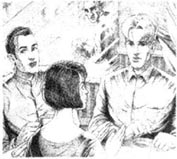
“在我告诉你之前，请先回答这个问题，好吗？”尼克说道，“你在惠斯勒时叫我好莱坞先生，是想让临桌那个男人，那个白头发的男人听到。我说得对吧？”
梅格·赫特森没有马上回答。过了一会儿她平静地答道：“是的。”
“为什么要那样？”尼克问道。
“我想让那个人去跟踪你，而不是我。”
“为什么要那样？”尼克又问了一遍。
“我觉得他是一个侦探，”梅格说，“我还觉得是我父亲雇了他跟踪我。我离开多伦多不久就看到了他。他跟踪我。”梅格挽住了克雷格·温特斯的胳膊。
“我父亲不喜欢克雷格，一个月前，他告诉我不许再见克雷格。我很难过，他也知道这个。我想他猜到了我要去见克雷格，所以现在他就要找到克雷格，阻止他和我见面。”
“阻止克雷格吗？”尼克问道，“还是要杀掉他？”
“不会的！”梅格·赫特森说道，“爸爸不会——”
“在温哥华，那个白发男人把我往汽车前面推，”尼克告诉她说，“在斯坦利公园他还开枪打我。”
“什么！”梅格叫道。
“跟——跟我说说那个白发男人的情况。”温特斯突然说道。
尼克看着他。“他大约60来岁，又高又瘦。”尼克说道。
“你知道他的名字吗？”温特斯问道。
“维克斯。”尼克答道。
克雷格·温特斯的脸色突然变了。“他是——是不是跟踪你到了维多利亚？他跟着你来这儿了吗？”
“我不知道。”尼克说。他看着温特斯。“你害怕他。为什么？为什么维克斯要杀你，温特斯？”
温特斯还没有开口回答，梅格的脸色一下子就变白了。“哦，不！”她叫道，“看！往那边看，门那边！”
尼克和克雷格·温特斯转过头看去。那个白发男子就站在茶座门口。他往屋里四处搜寻着，看见他们后，便朝他们坐着的桌子走来。他的手还插在口袋里。
桌旁的三个人惊呆了一两秒钟。接着克雷格·温特斯跳了起来。“那个人是好莱坞先生！”他惊叫道，“就是那边的那个人！”他手指着尼克。
白发男人从口袋里抽出手来——握着一枝枪。“这是为安娜报仇的！”他大叫道。
尼克急忙躲开。茶桌被掀翻了，尼克赶紧趴到了地上。子弹从他头顶飞过，梅格尖叫了起来。就在这时，克雷格·温特斯大叫一声，用手捂住了胳膊。白色的衬衣上渗出了鲜红的血。更多的人尖叫起来，两个服务员过来把白发男子按在了地上。
“快去报警！”有人喊道。
7．At the police station
7
At the police station
It was 7.30 p.m. Nick and Meg were in a room at the police station. The man called Vickers was in a different room, with three detectives. There was a doctor with him too. Craig Winters was at the hospital.
The door opened and a detective came in with two cups of coffee. He put them down on the table, and turned to go out again.
'Detective Edmonds,' Meg said, 'did the hospital call? Is Craig going to be all right?'
'Winters?' Detective Edmonds said. 'Yes, he's going to be OK.'
'Can I call the hospital now?' asked Meg.
'I'd like you to wait,' said Edmonds. 'Detective Keat is going to be here in a minute. He's just coming from the airport and—' He looked through the open door. 'Ah, here he is now.'
A second detective came into the room, and behind him was a tall man with dark hair.
Meg stood up quickly. 'Daddy!' she cried. 'What are you doing here?'
'The police called me,' said Howard Hutson, 'and I flew here at once. Detective Keat met me at the airport. Now, sit down, Meg. I want you to listen to me.' He did not look at Nick.
Meg sat down and her father took her hands. 'Meg, last week Johnnie Vickers came to my house. He wanted to talk about his daughter. You remember Anna, Meg? Three months ago she jumped off a bridge in Boston and died. She was young, beautiful, rich—and she didn't want to live. Why? Because she loved a man, and the man took her money, ran away and left her. And the man was called—'
'No!' said Meg. 'NO!'
'Yes, Meg, yes. He was called Mr Hollywood.'
'No!' shouted Meg. She began to cry.
'That's right, Miss Hutson,' said detective Keat quietly. 'To you, he gave the name Craig Winters. When Anna Vickers knew him, he was Carl Windser. But he liked all his... er... girlfriends to call him Mr Hollywood. He took nearly 50,000 dollars from Anna Vickers. And there was a girl before that... '
'No, it's not true!' Meg shouted.
'It is true, Meg,' said her father. 'Winters—Windser—gets all his money from rich men's daughters. Johnnie Vickers loved his daughter. He went to her house in Boston after she died. He read her letters, and learned about the money and the name Mr Hollywood. And when he came to my house, I told him about you, Meg. I said, "My daughter's got a new boyfriend, and she calls him Mr Hollywood. I don't like him, but I can't stop her. She's going away to meet him next week, I think. What can I do?" Johnnie put his hand on my arm, and he said, "Don't be afraid for your daughter. I'm going to find that man—and stop him!"'
Meg said nothing. Her face was very white. For a minute or two nobody spoke, then detective Edmonds said:
'Vickers told us all about it, Miss Hutson. He followed you to Whistler, and saw you with—'
Nick began to understand. 'With me, in the café! And Meg called me Mr Hollywood!'
Howard Hutson looked at Nick. 'You're the travel writer guy, right?'
'Lortz. Nick Lortz,' said Nick. 'Vickers nearly killed me. He shot at me twice, and—'
But Howard Hutson was not very interested in Nick. He looked at his daughter again.
'How much money did you give him, Meg?' he said.
'I—I gave him 25,000 dollars,' said Meg. 'Only for two or three months, he said. Then he...' She began to cry again.
'Well, you can say goodbye to that money,' said Hutson angrily.
'What's going to happen to Vickers?' Nick asked detective Edmonds.
'Hospital, I think,' said Edmonds. 'OK, he shot at you and about fifty people saw him. But he's not a well man. The doctors are going to put him away in a hospital.'
Howard Hutson stood up. 'OK, Meg, I'm going to take you home. My plane is waiting at the airport.'
Meg followed her father to the door, then she remembered Nick and turned.
'I'm sorry,' she said. 'I got you into all this. I called you Mr Hollywood. That was wrong. But I didn't know——'
'It's OK,' said Nick. 'You know everything now. And it's better to learn it now, and not later. 50, 000 dollars later.'
hospital n. institution providing medical and surgical treatment and nursing care for ill or injured people. 医院。
airport n. large area where civil aircraft land and take off. 飞机场。
second num. next after first in time, order, importance, etc. 第二个。
talk about... 谈论……
jump off... 从……跳下去。
bridge n. structure of wood. iron, concrete. etc., providing a way across a river, road, railway, etc. 桥，桥梁。
be afraid for... 为……而担心。
say goodbye to... 向……说再见。
well adj. in good health. 健康的，安好的。
It's OK. 还好。没事儿。
在警察局
7．在警察局
已经是晚上7:30了。尼克和梅格坐在警察局的一间屋子里。那个名叫维克斯的男子和三名侦探在另一间屋子里，跟他在一起的还有一名医生。克雷格·温特斯那时已经在医院了。
门开了，一名侦探端着两杯咖啡走了进来。他把咖啡放在桌子上，又转身出去了。
“埃德蒙兹侦探，”梅格问道，“医院来电话了吗？克雷格不会有事吧？”
“温特斯吗？”埃德蒙兹侦探说，“是的，他会没事的。”
“我现在可以给医院打电话吗？”梅格问道。
“我希望你能再等一等，”埃德蒙兹说，“基特侦探马上就来。他正从机场回来，还有——”他透过开着的门往外看去，“啊，他来了。”
又一位侦探来到了屋里，后面跟着一个高个子的黑发男人。
梅格马上站了起来。“爸爸！”她叫了出来，“你来这里干什么？”
“警方传唤我，”霍华德·赫特森说道，“我就马上乘飞机来了。基特侦探去机场接我。好了，梅格，坐下。你听我说。”他没有理会尼克。
梅格坐下来，父亲握住了她的手。“梅格，上个星期约翰尼·维克斯去了我那里，他是想跟我谈谈他的女儿。梅格，你还记得安娜吗？三个月前，她从波士顿的一座桥上跳了下去，摔死了。她还很年轻，又很漂亮、富有——可她就是不想活了。为什么？因为她爱一个人，而那个人却骗走了她的钱，离她而去。那个男的叫——”
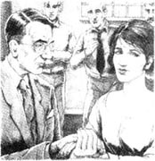
“不会的！”梅格说道，“不会的！”
“是的，梅格，是的。他叫好莱坞先生。”
“不会的！”梅格喊道。她哭了起来。
“这是事实，赫特森小姐，”基特侦探语气平静地说道，“他跟你说他叫克雷格·温特斯。安娜认识他的时候，他又叫卡尔·温莎。可他喜欢他的……呃……他所有的女朋友叫他好莱坞先生。他从安娜·维克斯那里骗走了50,000块钱。这之前还有另外一个女孩……”
“不，这不是真的！”梅格大声叫道。
“这是真的，梅格，”父亲说道，“温特斯——温莎——所有的钱都是从富家小姐的手里骗来的。约翰尼·维克斯很爱他的女儿。她死后，他去了她在波士顿的住处。他看了她的信，知道了钱的事和好莱坞先生这个名字。他来到我那里后我把你的事告诉了他，梅格。我说：‘我女儿新交了一个男朋友，她叫他好莱坞先生。我不喜欢他，可我阻拦不了她。我想她下周要去见他。我该怎么办？’约翰尼把手放在我的胳膊上说：‘不要担心你的女儿。我会找到那个人——并且阻止他的！’”
梅格沉默不语。她脸色惨白。一时间大家都沉默了，于是埃德蒙兹侦探开口道：
“维克斯跟我们说了这一切，赫特森小姐。他跟踪你到了惠斯勒，看到你和——”
尼克开始明白过来了。“和我在一起，在咖啡馆里！梅格还叫我好莱坞先生！”
霍华德·赫特森看着尼克。“你就是那位旅行作家，是不是？”
“洛茨。尼克·洛茨，”尼克说道，“维克斯差点儿杀了我。他两次开枪打我，还——”
可霍华德·赫特森对尼克并不感兴趣。他又转过头去看着自己的女儿。
“你给了他多少钱，梅格？”他问道。
“我——我给了他25,000块，”梅格说道，“他说他只借用两三个月。然后他……”梅格又哭了起来。
“好了，你可以跟那些钱说再见了。”赫特森生气地说道。
“维克斯会怎么样？”尼克问埃德蒙兹侦探。
“我想他会住在医院里。”埃德蒙兹回答，“对了，他朝你开枪，大约有50个人看到了。可他身体不好，医生会安排他住院的。”
霍华德·赫特森站起身来。“好了，梅格，我要带你回家。我的飞机在机场等着呢。”
梅格跟着父亲走到门口时想起了尼克，她转过身来。
“对不起，”她说道，“都是我给你惹来的麻烦。我不该叫你好莱坞先生，可我不知道——”
“没事了，”尼克说道，“你现在都知道了。现在知道会好一些，还不晚。总比等到丢了50,000块钱的时候要好。”
8．A nice smile
8
A nice smile
Nick took the evening ferry back to Vancouver. He was tired and hungry, so he went down to get some dinner in the ferry restaurant.
The restaurant was busy and there was only one free table. Nick sat down quickly and began to eat. 'I must get back to work tomorrow,' he thought, 'and forget about millionaires' daughters and men with guns.'
'Excuse me,' somebody said. 'Can I sit with you?'
Nick looked up. There was a pretty girl next to his table. He got up.
'It—it's OK,' he said. 'You can have this table. I don't want it.' And he began to move away.
'Please don't go,' the girl said. 'Stay and finish your dinner.' She smiled at him. It was a nice smile.
But Nick knew all about nice smiles.
'I'm not hungry,' he said.
And he walked quickly out of the restaurant.
甜蜜的微笑
8．甜蜜的微笑
尼克乘当晚的渡轮回温哥华。他又累又饿，于是去渡轮的餐厅吃晚餐。
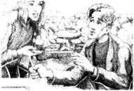
餐厅里人很多，只有一张餐桌空着。尼克马上坐下，吃起东西来。“我明天必须重新开始工作了，”他想，“别去想什么百万富翁的女儿还有带枪的男子了。”
“对不起，”有人说话，“可以坐在你这儿吗？”
尼克抬起头。餐桌旁边站着一个漂亮的女孩儿。他站起身来。
“可——可以，”他答道，“你可以用这张桌子，我不用了。”他说着就准备离开。
“请不要走呀，”女孩儿说，“在这儿吃完你的晚餐呀。”她冲她微笑着。一个很甜蜜的微笑。
可尼克对甜蜜的微笑太了解了。
“我不饿了。”他说道。
接着他便迅速离开了餐厅。
ACTIVITIES: Before Reading
ACTIVITIES
Before Reading
1. Read the introduction of the book. How much do you know now about the story? Tick one of the boxes.
1) This is a mystery story.
Yes□／No□
2) The story happens in the USA.
Yes□／No□
3) Nick gets a kiss from a beautiful girl in a café.
Yes□／No□
4) Nick met the girl three weeks ago.
Yes□／No□
5) The girl calls Nick 'Mr Hollywood'.
Yes□／No□
6) Nick knows the man with short white hair.
Yes□／No□
7) When Nick leaves the café, he forgets about the girl.
Yes□／No□
2. What is going to happen in the story? Can you guess? Tick one box for each sentence.
1) Nick tries to find the girl.
Yes□／No□／Perhaps□
2) Somebody tries to kill Nick.
Yes□／No□／Perhaps□
3) Nick kills 'Mr Hollywood'.
Yes□／No□／Perhaps□
4) Nick gets a lot of money.
Yes□／No□／Perhaps□
5) Nick meets the man with short white hair.
Yes□／No□／Perhaps□
ACTIVITIES: While Reading
ACTIVITIES
While Reading
1. Read Chapter 1 and answer these questions.
1) Who first saw the girl across the street?
2) What did Nick learn from the letter in the girl's bag?
3) The girl knew somebody called 'Mr Hollywood'. Why was he called that?
4) Who followed Nick when he left the café?
5) Who watched Nick from a hotel window?
2. Read Chapter 2, and then complete these sentences. Use one word for each gap.
1) Nick fell in front of a car because somebody ______ him.
2) In the hotel Nick read a ______ and saw a ______ of Jan.
3) She was Meg Hutson, the daughter of a ______.
3. Read Chapter 3. Choose the best question-word for these questions, and then answer them.
Who/Where/What
1) ... noise did Nick hear in the park?
2) ... did Nick find on the window of his car?
3) ... did Nick go next?
4) ... wrote down Nick's story?
4. Read Chapter 4. Are these sentences true (T) or false (F)? Change the false sentences into true ones.
1) The woman at the hotel desk was not interested in Nick's questions about a man with white hair.
2) It was a very small hotel.
3) Nick remembered the letter in the girl's bag.
4) Nick saw the man with white hair in a taxi.
5) A small girl ran in front of Nick in the hotel restaurant, and Nick ran into her.
6) The name of the man with white hair was Mr Hutson.
5. Read Chapter 5, and then put these sentences in the right order.
1) He saw Nick's car outside the hotel.
2) Nick took the ferry to Vancouver Island.
3) Then he came into the hotel, with a gun in his pocket.
4) She was in the hotel tea room with a man.
5) Then he went to the Empress Hotel in Victoria and asked for Meg Hutson.
6) But the man with white hair followed Nick to Vancouver Island.
6. Read Chapter 6. Who said this, and to whom?
1) 'No, thanks. I'm with the two people over there.'
2) 'Sometimes called Mr Hollywood?'
3) 'I think he's a detective. And I think he's working for my father.'
4) 'Tell—tell me about this man with white hair.'
5) 'You're afraid of him. Why?'
6) 'That's Mr Hollywood! That man there!'
7) 'This is for Anna!'
7. Before you read Chapters 7 and 8, look at these sentences. Can you guess the best ending for each sentence?
1) Mr Vickers wants to kill Mr Hollywood because...
(a) he likes to kill people.
(b) Mr Hollywood killed or hurt someone in his family.
(c) Mr Hollywood took all his money.
2) Anna is Mr Vickers'...
(a) daughter.
(b) sister.
(c) wife.
3) Craig Winters...
(a) dies.
(b) goes to prison.
(c) goes to hospital.
4) Mr Vickers...
(a) dies.
(b) goes to prison.
(c) goes to hospital.
ACTIVITIES: After Reading
ACTIVITIES
After Reading
1. Read this newspaper report about the shooting at the Empress Hotel. There are 16 things wrong with it. Find the mistakes and correct them.
This afternoon a gunman shot a woman in the Empress Hotel in Victoria. 'He walked past me and went into the television room,' said the woman behind the hotel desk. 'He was a short fat man with red hair.'
The man took a gun out of his bag and walked across to a table. A young woman at this table jumped to her feet and shouted, 'Mr Hollywood's not here!' A second young woman pushed over the tea table. The gunman shot three times and hit one of the young women in the leg.
Three waiters pulled the gunman down on to the floor. Soon after, the police arrived.
The gunman is Mr Nick Lortz. His daughter Meg died three months ago in San Francisco. She fell under a train.
Now choose the best headline for the report.
· MAN KILLED AT EMPRESS HOTEL
· SHOOTING AT THE EMPRESS
· WOMAN SHOT BY MYSTERY GUNMAN
· DINNER STOPS FOR GUNMAN
2. Match the people with the sentences. Then use the sentences to write a short description of each person. Use pronouns (he, she, him, her) and linking words (but, and, because) when you can.
Nick Lortz/Meg Hutson/Craig Winters/Howard Hutson/ Johnnie Vickers
Example: Nick met a girl in a café in Whistler. He didn't know her, but he...
1) Nick met a girl in a café in Whistler.
2) ________ was the daughter of a millionaire.
3) ________ used a lot of different names.
4) ________ was Meg's father.
5) ________ was the man with white hair.
6) ________ loved a man called Craig Winters.
7) ________ wanted to stop his daughter seeing 'Mr Hollywood'.
8) Nick didn't know this girl.
9) ________ got all his money from rich men's daughters.
10) ________ thought that Nick was 'Mr Hollywood'.
11) ________ was happy to sit and talk with this girl.
12) ________ liked his girlfriends to call him 'Mr Hollywood'.
13) ________ gave Craig Winters 25,000 dollars.
14) ________ tried three times to kill Nick.
15) ________ knew Johnnie Vickers.
3. Here is a new illustration for the story. Find the best place in the story to put the picture, and answer these questions.
The picture goes in Chapter ________.
1) Who are the two men in the picture?
2) Where are they?
3) What are they doing?
Now write a caption for the illustration.
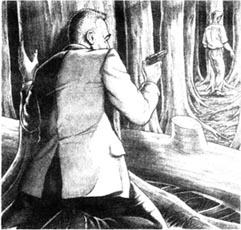
Caption:______________________________
4. How does Craig Winters get 25,000 dollars out of Meg? Put their telephone conversation in the right order, and write in the names. Craig speaks first (number 5).
1) ________ 'Why? What's the matter?'
2) ________ 'No, no. I can't take money from you, Meg.'
3) ________ 'Craig, I'm fine. But I want to see you. When can we meet?'
4) ________ 'Meg, you're wonderful. How about 25,000? Just for two or three months, you understand.'
5) ________ 'Hi, Meg. How are you?'
6) ________ 'It's my mother. I can't leave her because her legs are very bad and she can't walk far. She needs a new car, but I don't have the money just now.'
7) ________ 'Of course you can! How much do you need? 15,000? 20,000? Just tell me. You can have it tomorrow.'
8) ________ 'I don't know. I want to see you too, but things aren't easy at the moment.'
9) ________ 'But Craig, that's easy! I can give you the money.'
5. Use words from (1) with words from (2) to make some new titles for this story. How many titles can you make? Which ones are best for the story?
1) a / the / at / in / with / of / and / hello
2) café / daughter / girl / hair / Hollywood / man / Mr / meeting / mystery / nice / rich / smile / Whistler / white / Winters / wrong
封底
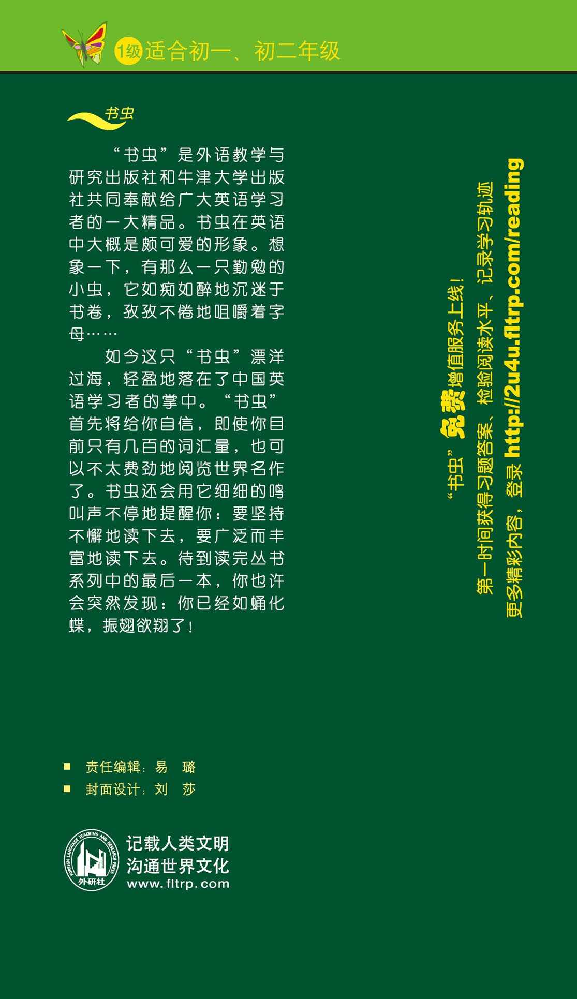